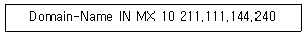
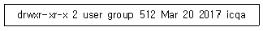
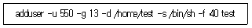
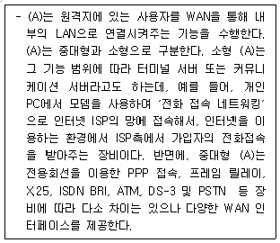
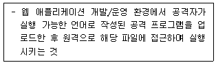
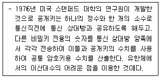

네트워크관리사-1급 (2021-04-11 기출문제)
1과목: TCP/IP
1. TCP/IP 에 대한 설명으로 옳지 않은 것은?
- TCP는 전송계층(Transport Layer)프로토콜이다.
- IP는 네트워크계층(Network Layer)의 프로토콜이다.
- TCP는 전송을 담당하고, IP는 데이터의 에러검출을 담당한다.
- Telnet과 FTP는 모두 TCP/IP 프로토콜이다.
(정답률: 56%)

2. IP Header Fields에 대한 내용 중 옳지 않은 것은?
- Version - 4bits
- TTL - 16bits
- Type of Service - 8bits
- Header Checksum - 16bits
(정답률: 55%)
3. IP Address 할당에 대한 설명으로 옳지 않은 것은?
- 198.34.45.255는 개별 호스트에 할당 가능한 주소이다.
- 127.X.X.X는 Loopback으로 사용되는 특별한 주소이다.
- 167.34.0.0은 네트워크를 나타내는 대표 주소이므로 개별 호스트에 할당할 수 없다.
- 호스트 ID의 모든 비트가 1로 채워진 경우는 브로드캐스트로 사용되므로 이러한 주소는 개별 호스트를 위하여 사용될 수 없다.
(정답률: 66%)
4. IP Address ′138.212.30.25′가 속하는 Class는?
- A Class
- B Class
- C Class
- D Class
(정답률: 68%)
5. 서브넷 마스크에 대한 설명으로 올바른 것은?
- IP Address에서 네트워크 Address와 호스트 Address를 구분하는 기능을 수행한다.
- 여러 개의 네트워크 Address를 하나의 Address로 통합한다.
- Address는 효율적으로 관리하나 트래픽 관리 및 제어가 어렵다.
- 불필요한 Broadcasting Message는 제한 할 수 없다.
(정답률: 70%)
6. 서브넷이 최대 25개의 IP Address를 필요로 할 때, 서브넷 마스크로 올바른 것은?
- 255.255.255.192
- 255.255.255.224
- 255.255.192.0
- 255.255.224.0
(정답률: 58%)
7. IPv6에 대한 설명으로 옳지 않은 것은?
- 확장된 헤더에 선택사항들을 기술할 수 있다.
- 멀티캐스트를 새로 도입하였다.
- 특정한 흐름에 속해 있는 패킷들을 인식할 수 있다.
- 패킷의 출처 인증, 데이터 무결성의 보장 및 비밀의 보장 등을 위한 메커니즘을 지정할 수 있다.
(정답률: 62%)
8. SMTP에 대한 설명 중 옳지 않은 것은?
- 두 호스트 간 메시지 전송을 제공한다.
- 네트워크의 구성원에 패킷을 보내기 위한 하드웨어 주소를 정한다.
- 전송에 대해 TCP를 사용한다.
- 인터넷상에서 전자우편(E-Mail)의 전송을 규정한다.
(정답률: 60%)
9. 아래의 조건은 DNS 기록의 형식이다. 이에 해당되는 것은?

- 정규 네임 자원 기록
- 주소 자원 기록
- 메일 교환 자원 기록
- 네임 서버 자원 기록
(정답률: 38%)
10. FTP 서버에 접속 후 ′ls -al′ 명령어를 통해 얻은 결과 중 일부이다. 맨 앞의 ′d′가 의미하는 것은?

- 링크 파일
- 디렉터리
- 삭제된 파일
- 임시 파일
(정답률: 66%)
11. SSH 프로토콜이 사용하는 포트 번호는?
- TCP 22번
- TCP 23번
- UDP 24번
- UDP 25번
(정답률: 53%)
12. 지역 네트워크 구획에서 호스트가 다른 호스트와 통신하려 할 때, ARP 과정을 서술한 것 중 옳지 않은 것은?
- 시작지의 호스트는 자신이 가지고 있는 ARP 캐시를 검사하여 목적지 호스트의 IP Address가 있는지 없는지를 알아본다.
- 각 호스트는 목적지 호스트의 IP Address가 ARP 패킷에 있는 IP와 일치하지 않으면 패킷을 저장하고, 일치하면 목적지 호스트는 IP Address와 MAC Address 정보를 ARP 캐시에 추가한다.
- 목적지 호스트는 자신의 IP Address와 MAC Address를 포함하는 ARP 회답을 만든다.
- 시작지 호스트는 IP Address와 MAC Address를 시작지 호스트의 ARP 캐시에 추가한다.
(정답률: 41%)
13. UDP에 대한 설명 중 옳지 않은 것은?
- 가상선로 개념이 없는 비연결형 프로토콜이다.
- TCP보다 전송속도가 느리다.
- 각 사용자는 16비트의 포트번호를 할당받는다.
- 데이터 전송이 블록 단위이다.
(정답률: 60%)
14. Windows Server의 ′netstat′ 명령 중 이더넷 인터페이스와 프로토콜별 통계결과를 출력하는 명령은?
- Netstat –r -b
- Netstat -a -n
- Netstat –o -a
- Netstat -e -s
(정답률: 45%)
15. IP Address가 ′165.132.10.21′일 때 해당 Class와 사설 IP 대역을 바르게 짝지은 것은? (단, 서브넷 마스크는 Class에 맞는 기본 서브넷 마스크를 사용한다.)
- B Class , 사설 IP 대역 : 172.16.0.0 ~ 172.31.255.255
- B Class , 사설 IP 대역 : 162.32.0.0 ~ 162.192.255.255
- A Class , 사설 IP 대역 : 10.0.0.0 ~ 10.255.255.255
- C Class , 사설 IP 대역 : 192.168.0.0 ~ 192.168.255.255
(정답률: 50%)
16. 망 내 교환 장비들이 오류 상황에 대한 보고를 할 수 있게 하고, 예상하지 못한 상황이 발생한 경우 이를 알릴 수 있도록 지원하는 프로토콜은?
- ARP
- RARP
- ICMP
- RIP
(정답률: 65%)
2과목: 네트워크 일반
17. 멀티캐스트를 지원하는 라우터가 멀티캐스트 그룹에 가입한 네트워크 내의 호스트를 관리하기 위한 프로토콜은?
- SMTP
- ICMP
- SCTP
- IGMP
(정답률: 60%)
18. 홈오토메이션, 산업용기기 자동화, 물류 및 환경 모니터링 등 무선 네트워킹에서 10~20M 내외의 근거리 통신시장과 최근 주목받고 있는 유비쿼터스 컴퓨팅를 위한 기술로서, 저 비용, 저 전력의 저속 데이터 전송의 특징과 하나의 무선네트워크에 255대의 기기 연결이 가능한 이 기술은?
- Bluetooth
- 무선 LAN
- Zigbee
- WiBro
(정답률: 34%)
19. 변조에 대한 설명으로 적절한 것은?
- 전달하고자 하는 신호를 목적지까지 효율적으로 보내기 위해 신호를 전송에 적합한 형태로 바꾸는 것이다.
- 단말기의 수신가능 신호에 적합한 신호를 생성하는 조직이다.
- 복잡한 신호를 단순하게 하는 신호조작이다.
- 신호에 제어신호를 추가하는 조작이다.
(정답률: 64%)
20. 오류 검출 방식인 ARQ 방식 중에서 일정한 크기 단위로 연속해서 프레임을 전송하고 수신측에 오류가 발견된 프레임에 대하여 재전송 요청이 있을 경우 잘못된 프레임만을 다시 전송하는 방법은?
- Stop-and-Wait ARQ
- Go-back-N ARQ
- Selective-repeat ARQ
- Adaptive ARQ
(정답률: 59%)
21. 멀티 플렉싱 방식 중 주파수 대역폭을 다수의 작은 대역폭으로 분할 전송하는 방식은?
- ATDM
- CDM
- FDM
- STDM
(정답률: 60%)
22. 성형 토폴로지의 특징으로 옳지 않은 것은?
- 중앙 제어 노드가 통신상의 모든 제어를 관리한다.
- 설치가 용이하나 비용이 많이 든다.
- 중앙 제어노드 작동불능 시 전체 네트워크가 정지한다.
- 모든 장치를 직접 쌍으로 연결할 수 있다.
(정답률: 60%)
23. 트랜스포트 계층의 주된 기능에 해당하는 것은?
- 망 종단 간 데이터의 전달
- 링크 간 프레임 전송
- 노드 간 패킷 전송
- 물리매체에 비트 열 전송
(정답률: 57%)
24. OSI 7 Layer의 각 Layer 별 Data 형태로서 적당하지 않은 것은?
- Transport Layer - Segment
- Network Layer - Packet
- Datalink Layer - Fragment
- Physical Layer - bit
(정답률: 58%)
25. 데이터 전송 운영 방법에서 수신측에 n개의 데이터 블록을 수신할 수 있는 버퍼 저장 공간을 확보하고, 송신측은 확인신호 없이 n개의 데이터 블록을 전송하며, 수신측은 버퍼가 찬 경우 제어정보를 송신측에 보내서 송신을 일시 정지시키는 흐름제어는?
- 블록
- 모듈러
- Xon/Xoff
- Window
(정답률: 40%)
26. CRC(Cyclic Redundancy Checking) 에러검출 방법에 대한 설명으로 옳지 않은 것은?
- 프레임이 수신되면 수신기는 같은 제수(Generator)를 사용하여 나눗셈의 나머지를 검사한다.
- CRC 비트를 만들기 위해 논리합 연산을 수행한다.
- 전체 블록 검사를 위해 메시지는 하나의 긴 이진수로 간주한다.
- 메시지를 특정한 이진 소수에 의해 나눈 후 나머지를 송신 프레임에 첨부하여 전송한다.
(정답률: 28%)
27. OSI 7 Layer 별로 역할을 잘못 연결한 것은?
- Application - 데이터 표현, 코드 포맷 제공
- Session - 두 호스트 간에 어플리케이션을 위한 커넥션 설정, 유지, 복구
- Network - 데이터를 전송하는 최적의 경로선택
- Physical - 시스템 사이에서 물리적인 전송을 담당
(정답률: 48%)
3과목: NOS
28. 네트워크 담당자 John은 Windows Server 2016을 활용하여 리소스 모니터를 통해 네트워크를 모니터링 하고 있다. 네트워크 모니터링 항목으로 옳지 않은 것은?
- 네트워크 활동이 있는 프로세스
- 네트워크 활동
- IP 연결
- 수신 대기 포트
(정답률: 21%)
29. 서버 담당자 Kang 사원은 Windows Server 2016의 이벤트 뷰어를 통해 감사 정책에 따른 로그 정보를 학인하여 서버의 상태를 지속적으로 체크하고 있다. 하드웨어 이벤트와 관련한 항목으로 올바른 것은?
- 사용자 지정 보기
- Windows 로그
- 응용 프로그램 및 서비스 로그
- 구독
(정답률: 25%)
30. 서버 담당자 Park 대리는 Windows Server 2016을 이용하여 자동으로 보안 템플릿을 만들어 시스템에 적용하고 분석하는데 SecEdit.exe 도구를 사용하고자 한다. SecEdit.exe 도구를 사용하여 시스템에 적용할 보안 영역에 대한 설명으로 옳지 않은 것은?
- SECURITYPOLICY : 시스템에 대한 로컬 정책 및 도메인 정책
- GROUP_MGMT : 보안 템플릿에 지정된 관리 그룹
- USER_RIGHTS : 사용자 로그온 권한 및 사용 권한 부여
- SERVICES : 정의된 모든 서비스
(정답률: 20%)
31. 서버 관리자 Scott 사원은 Windows Server 2016 운영체제를 기반으로 데이터베이스를 운영하고 있다. 데이터 저장장치의 분실에 의한 개인정보가 누출되지 않도록 하기 위하여 BitLocker 기술을 활용하고자 한다. BitLocker 기술에 대한 설명으로 옳지 않은 것은?
- BitLocker 기능을 사용하기 위해서는 TPM이 장착된 메인보드를 반드시 사용해야 한다.
- 고정 데이터, 운영 체제, 이동식 데이터 드라이브에 대한 암호화 수준을 개별적으로 구성이 가능하다.
- 볼륨 또는 디스크를 통째로 잠그는 기능으로, 파일이나 폴더 단위로 암호화하는 EFS에 비해 기능이 강력하다.
- 드라이브 잠금 해제를 위한 암호를 분실한 경우, 48자리의 복구키를 이용하여 잠금을 해제할 수 있다.
(정답률: 22%)
32. Windows Server 2016 보안을 위한 윈도우 인증의 구성요소에 대한 설명으로 옳지 않은 것은?
- LSA : 모든 계정의 로그인에 대한 검증을 하고 시스템 자원 및 파일 등에 대한 접근 권한을 검사한다.
- SAM : 사용자와 그룹 계정 정보에 대한 데이터베이스를 관리하고, 로그인에 대한 인증 여부를 결정한다.
- SRM : 사용자에게 SID를 부여하고, 파일이나 디렉토리에 대한 접근 권한 결정과 감사 메시지를 생성한다.
- GINA : 사용자가 입력한 아이디와 패스워드를 SAM에 전달하여 인증 여부를 결정하도록 한다.
(정답률: 30%)
33. 서버 담당자 Kim 대리는 Windows Server 2016을 사용하여 보안 설정을 하려고 한다. 로컬 그룹 정책 편집기(로컬 컴퓨터 정책)로 보안 설정을 할 수 있는 항목으로 옳지 않은 것은?
- 공개 키 정책
- 정책 기반 QoS
- 고급 감사 정책 구성
- 소프트웨어 제한 정책
(정답률: 24%)
34. 리눅스 서버 관리자인 Han 과장은 iptables를 이용하여 패킷을 필터링하는 방화벽으로 사용하고 있다. Iptables 규칙의 설정 파라미터인 커맨드에 대한 설명으로 옳지 않은 것은?
- iptables -A : 패킷 필터링 규칙을 설명하는데 사용한다.
- iptables -D : 패킷 필터링 규칙을 삭제하는데 사용한다.
- iptables -L : 패킷 필터링 규칙을 표시하는데 사용한다.
- iptables -F : 패킷 필터링 규칙을 삭제하는데 사용한다.
(정답률: 24%)
35. 서버 관리자인 Lee 사원은 리눅스와 윈도우즈 운영체제 사이에 자료 공유 등을 위하여 삼바를 사용한다. 삼바와 관련한 설명으로 옳지 않은 것은?
- 삼바의 접근 관련 설정 파일은 ′/etc/samba/smb.conf′ 이다.
- 리눅스에서 윈도우 서버로 접속할 때 ′smbclient′ 명령어를 사용한다.
- 리눅스에 공유된 디렉토리를 마운트할 때 ′mount.cifs′ 명령어를 사용한다.
- 삼바 서버에서 클라이언트의 연결상태를 확인하는 명령어는 ′smbstatus′ 이다.
(정답률: 32%)
36. 시스템 담당자인 LEE 사원은 현재 디렉토리 아래에서 최근 1주일 이내에 수정된 파일들을 검색하고, 해당하는 파일들을 자세히 보고자 한다. 이를 위한 명령어와 옵션으로 올바른 것은?
- find . -mtime +7 -exec ls -al {} ＼;
- find . -mtime -7 -exec ls -al {} ＼;
- find . -atime +7 -exec ls -al {} ＼;
- find . -atime -7 -exec ls -al {} ＼;
(정답률: 38%)
37. 서버 관리자 KIM 사원은 웹서버의 설정파일인 ′httpd.conf′을 관리자 계정을 가진 사용자일지라도 파일의 내용 및 이름을 변경하거나 삭제가 불가능하도록 해당 파일의 속성을 확인하고, 적절한 속성을 설정하고자 한다. 이를 위한 명령어와 옵션으로 올바른 것은?
- ls -al, chmod 744
- lsattr -a, chmod 744
- ls -al, chattr +I
- lsattr -a, chattr +i
(정답률: 25%)
38. Linux에서 DNS를 설치하기 위한 ′named.zone′ 파일의 SOA 레코드에 대한 설명으로 옳지 않은 것은?
- Serial : 타 네임서버가 이 정보를 유지하는 최소 유효기간
- Refresh : Primary 네임서버의 Zone 데이터베이스 수정 여부를 검사하는 주기
- Retry : Secondary 네임서버에서 Primary 네임서버로 접속이 안 될 때 재시도를 요청하는 주기
- Expire : Primary 네임서버 정보의 신임 기간
(정답률: 40%)
39. Linux 시스템에서 ′chmod 644 index.html′라는 명령어를 사용하였을 때, ′index.html′ 파일에 변화되는 내용으로 옳은 것은?
- 소유자의 권한은 읽기, 쓰기가 가능하며, 그룹과 그 외의 사용자 권한은 읽기만 가능하다.
- 소유자의 권한은 읽기, 쓰기, 실행이 가능하며, 그룹과 그 외의 사용자 권한은 읽기만 가능하다.
- 소유자의 권한은 쓰기만 가능하며, 그룹과 그 외의 사용자 권한은 읽기, 쓰기가 가능하다.
- 소유자의 권한은 읽기만 가능하며, 그룹과 그 외의 사용자 권한은 읽기, 쓰기, 실행이 가능하다.
(정답률: 49%)
40. DNS 레코드 중 IP Address를 도메인 네임으로 역매핑하는 레코드는?
- SOA
- A
- PTR
- CNAME
(정답률: 46%)
41. Linux 명령어 중 사용자 그룹을 생성하기 위해 사용되는 명령어는?
- groups
- mkgroup
- groupstart
- groupadd
(정답률: 40%)
42. Linux의 ′ln′ 명령어에 대한 설명으로 옳지 않은 것은?
- 하드링크로 생성된 파일은 원본 파일과 inode가 같다.
- 자신이 액세스 할 수 없는 사용권한을 가졌더라도 ′-f′ 옵션을 사용하면 링크가 가능하다.
- 심볼릭링크를 사용할 때, 원본 파일이 삭제되어도 이 심볼릭링크 파일은 사용할 수 있다.
- 하드링크는 원본 파일을 삭제하더라도 다른 링크된 파일에는 영향이 없다.
(정답률: 44%)
43. Linux에서 다음과 같은 옵션을 사용하여 사용자 계정을 추가한 경우 설명이 잘못된 것은?

- 사용자 계정은 test이다.
- 홈 디렉터리로는 ′/home/test′를 사용한다.
- 셸은 본셸을 사용한다.
- 40일마다 패스워드를 변경하도록 설정한다.
(정답률: 32%)
44. Linux에서 주어진 명령어의 매뉴얼(도움말, 옵션 등)을 출력하기 위해 사용되는 명령어는?
- ps
- fine
- man
- ls
(정답률: 48%)
45. DHCP 서비스 이용 시 이점으로 옳지 않은 것은?
- 새 컴퓨터를 구성 할 때 다시 사용되는 IP Address와 충돌 문제를 일으킬 수 있다.
- 관리자의 단순하고 반복적인 작업에 대한 부담을 덜어 관리효율성 및 TCO(Total Cost of Ownership: 총소유비용)를 절감한다.
- 위치를 자주 바꾸는 이동 또는 휴대용 컴퓨터 사용자에게 적합하다.
- 네트워크의 컴퓨터를 구성하는데 소요되는 시간을 크게 줄일 수 있다.
(정답률: 54%)
4과목: 네트워크 운용기기
46. 다음의 (A)에 들어갈 알맞은 용어는 무엇인가?

- WAS (Web Application Server)
- DNS (Domain Name System)
- RAS (Remote Access Server)
- NAT (Network Address Translation)
(정답률: 35%)
47. 라우터(Router)는 OSI 7 Layer 중 어느 계층에서 동작하는가?
- Physical Layer
- DataLink Laye
- Network Layer
- TCP/IP Layer
(정답률: 58%)
48. 다음 중 라우터에서 경로를 찾는데 사용되는 라우팅 프로토콜의 종류로 옳지 않은 것은?
- RIP
- OSPF
- IPX
- EIGRP
(정답률: 53%)
49. 네트워크 장비 중 Repeater의 특징으로 옳지 않은 것은?
- 회선상의 전자기 또는 광학 신호를 증폭하여 네트워크의 길이를 확장할 때 쓰인다.
- OSI 7 Layer 중 물리적 계층에 해당하며 두 개의 포트를 가지고 있어 한쪽 포트로 들어온 신호를 반대 포트로 전송한다.
- HUB에 Repeater 회로가 내장되어 Repeater를 대신하여 사용하는 경우가 있다.
- 단일 네트워크에는 여러 대의 Repeater를 사용 할 수가 없다.
(정답률: 56%)
50. LAN 카드의 MAC Address에 실제로 사용하는 비트 수는?
- 16bit
- 32bit
- 48bit
- 64bit
(정답률: 53%)
5과목: 정보보호개론
51. 무차별 대입 공격이라 하며 주어진 경우의 수를 모두 대입하여 암호를 크랙하는 기법은?
- Reflective XSS
- Brute-Force Attack
- Dictionary Attack
- SQL injection
(정답률: 52%)
52. 다음에서 설명하는 기술은?

- SQL injection
- 파일 업로드 공격
- 파일 다운 로드 공격
- 드라이브 다운 로드
(정답률: 54%)
53. 다음 중 스니핑(Sniffing) 해킹 방법에 대한 설명으로 가장 올바른 것은?
- Ethernet Device 모드를 Promiscuous 모드로 전환하여 해당 호스트를 거치는 모든 패킷을 모니터링 한다.
- TCP/IP 패킷의 내용을 변조하여 자신을 위장한다.
- 스텝 영역에 Strcpy와 같은 함수를 이용해 넘겨받은 인자를 복사함으로써 스택 포인터가 가리키는 영역을 변조한다.
- 클라이언트로 하여금 다른 Java Applet을 실행시키도록 한다.
(정답률: 46%)
54. 다음에서 설명하는 키 교환 알고리즘은 무엇인가?

- Diffie-Hellman
- 3-DES
- AES(Rijndael)
- Seed
(정답률: 28%)
55. DoS(Denial of Service)의 개념으로 옳지 않은 것은?
- 다량의 패킷을 목적지 서버로 전송하여 서비스를 불가능하게 하는 행위
- 로컬 호스트의 프로세스를 과도하게 fork 함으로써 서비스에 장애를 주는 행위
- 서비스 대기 중인 포트에 특정 메시지를 다량으로 보내 서비스를 불가능하게 하는 행위
- Internet Explorer를 사용하여 특정권한을 취득하는 행위
(정답률: 49%)
56. 5명의 사용자가 대칭키(Symmetric Key)를 사용하여 주고받는 메시지를 암호화하기 위해서 필요한 총 키의 수는?
- 2개
- 5개
- 10개
- 1개
(정답률: 43%)
57. Linux 시스템에서 패스워드의 유효 기간을 정하는데 사용될 수 없는 방법은?
- '/etc/login.defs' 의 설정을 사용자 account 생성 시 지정
- chown 명령을 활용하여 지정
- '/etc/default/useradd' 파일의 설정을 account 생성 시 지정
- change 명령을 활용하여 지정
(정답률: 44%)
58. SET(Secure Electronic Transaction)에 대한 설명 중 옳지 않은 것은?
- 초기에 마스터카드, 비자카드, 마이크로소프트, 네스케이프 등에 의해 후원되었다.
- 인터넷상에서의 금융 거래 안전을 보장하기 위한 시스템이다.
- 메시지의 암호화, 전자증명서, 디지털서명 등의 기능이 있다.
- 지불정보는 비밀키를 이용하여 암호화한다.
(정답률: 49%)
59. Apache 웹 서버 로그에서 확인 할 수 없는 정보는?
- 클라이언트의 IP Address
- 클라이언트의 요청 페이지
- 클라이언트의 접속 시도 날짜
- 클라이언트의 게시판 입력 내용
(정답률: 52%)
60. S/MIME에 대한 설명으로 옳지 않은 것은?
- 전자우편 보안 서비스로, HTTP에서는 사용이 불가능하다.
- X.509 형태의 S/MIME 인증서를 발행하여 사용한다.
- 전자 서명과 암호화를 동시에 사용할 수 있다.
- 대칭키 암호 알고리즘을 사용하여 전자우편을 암호화 한다.
(정답률: 36%)